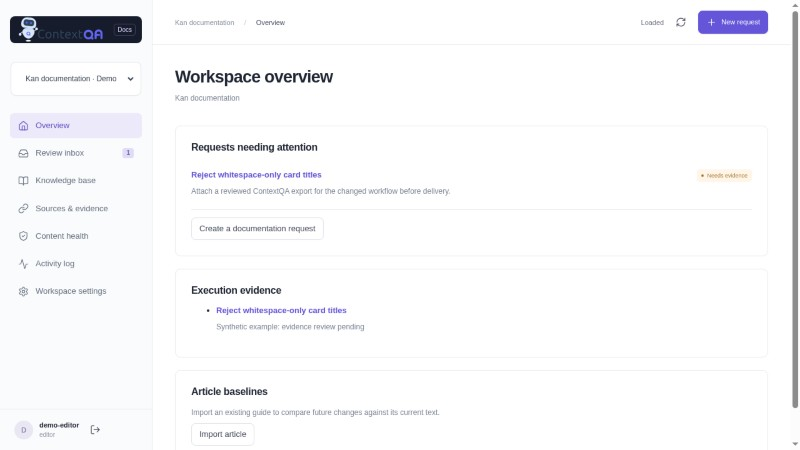

Find a documentation request
Use this guide as an editor in the sample Kan workspace.
- Open Workspace overview.
- Under Requests needing attention, select Reject whitespace-only card titles.
- Read the outstanding evidence request before reviewing the proposed article.

Ship 5 captured the synthetic workspace in case 199, result 460.Watch the sample review walkthrough (MP4)